Elecciones alternativas de 2003
Ocho escenarios presidenciales basados en los mapas de u/Alarmed_Rope5383.
Elegí un escenario
Reconstrucciones hipotéticas, con votos locales estimados.
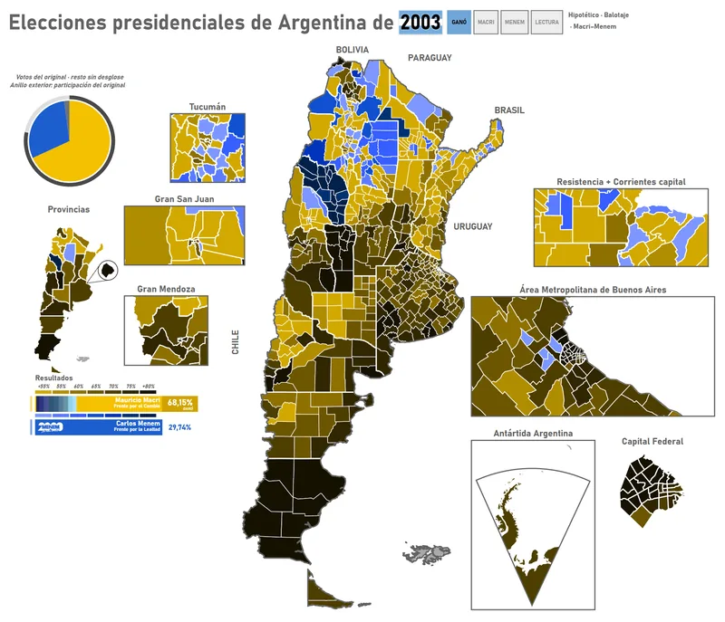
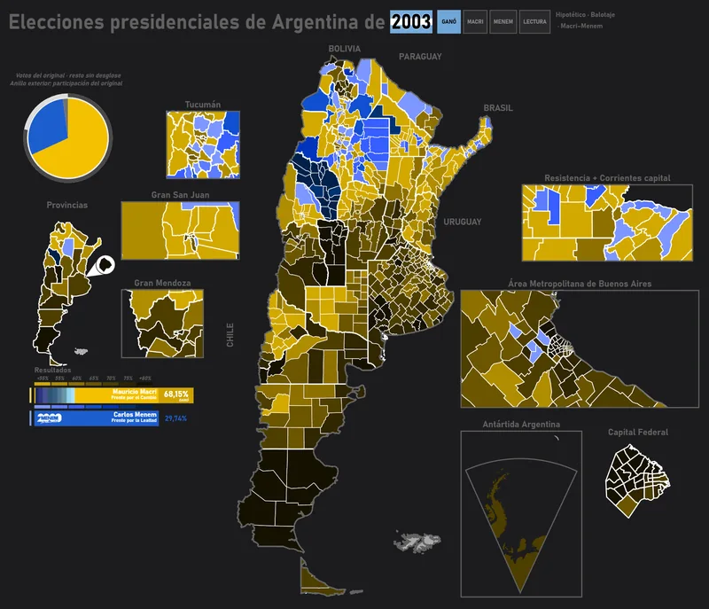
Macri / Menem
Descargar votos estimados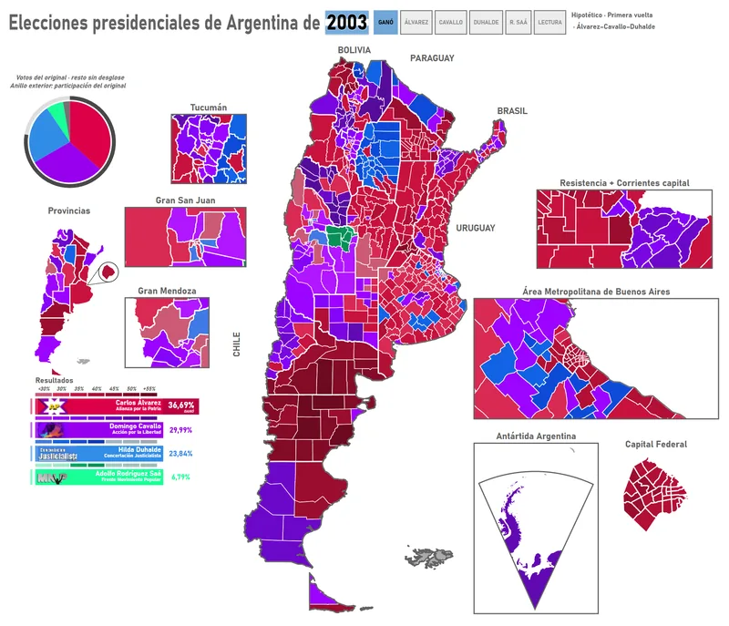
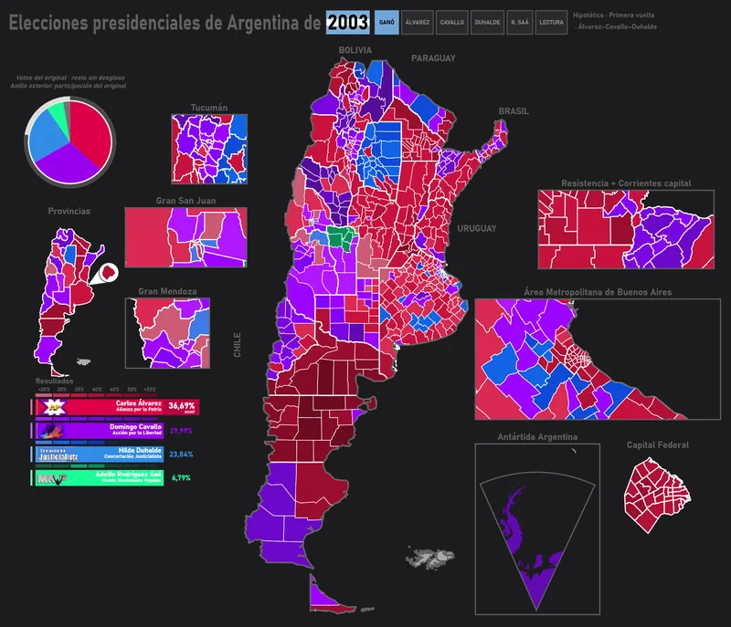
Álvarez / Cavallo / Duhalde
Descargar votos estimados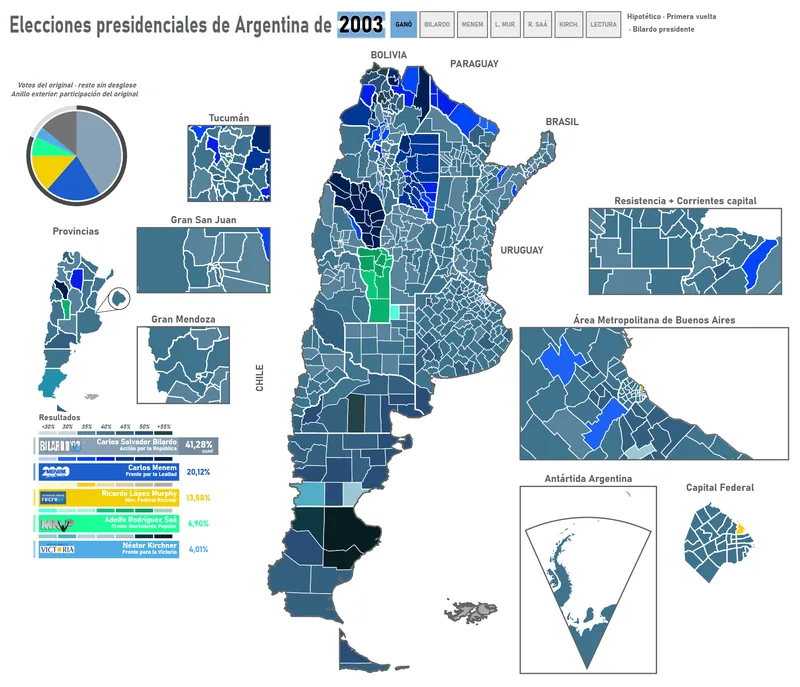
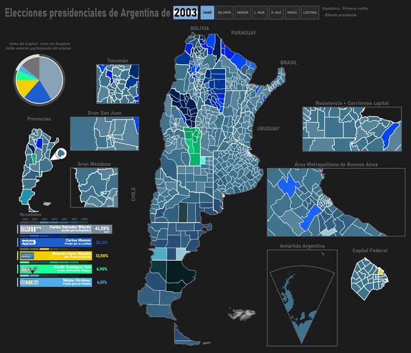
Bilardo presidente
Descargar votos estimados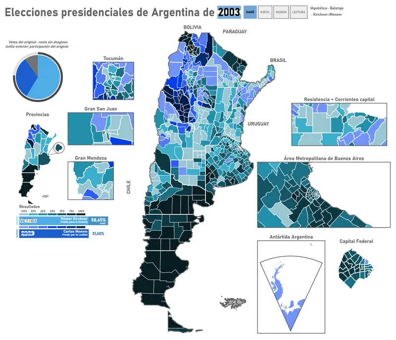
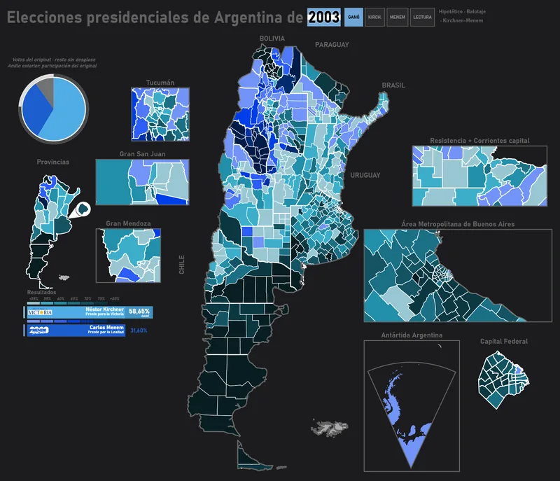
Kirchner / Menem
Descargar votos estimados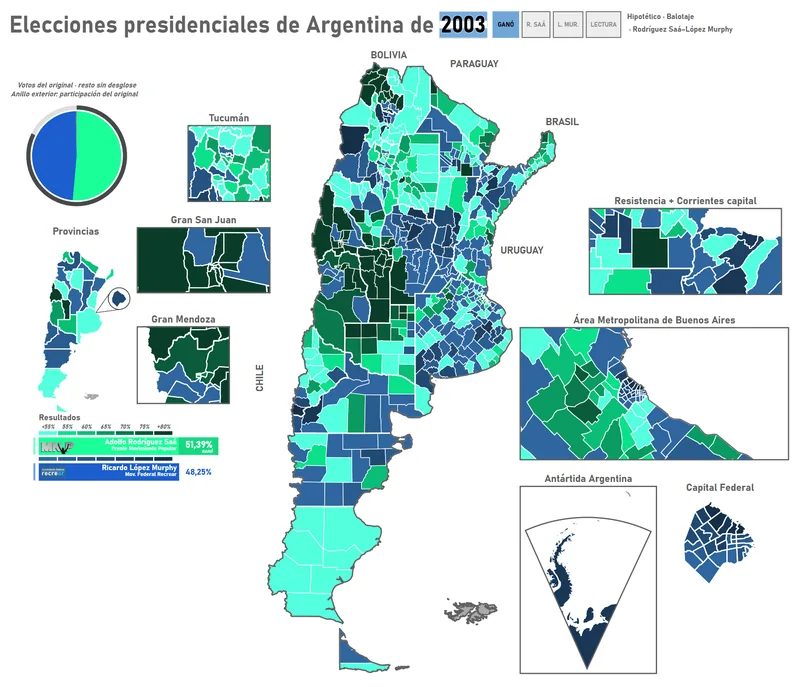
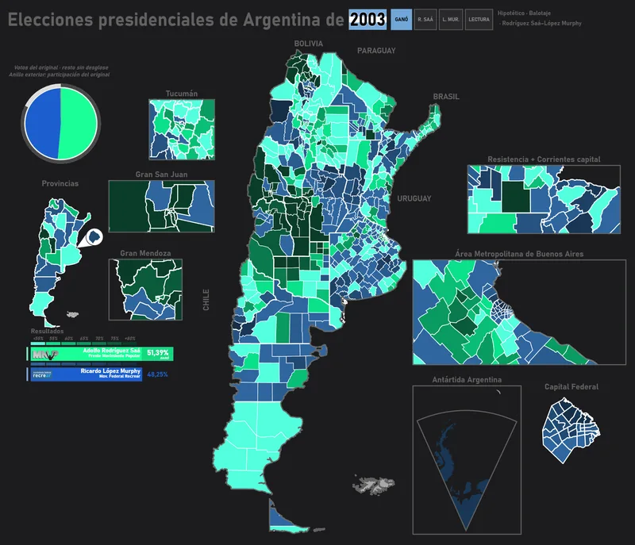
Rodríguez Saá / López Murphy
Descargar votos estimados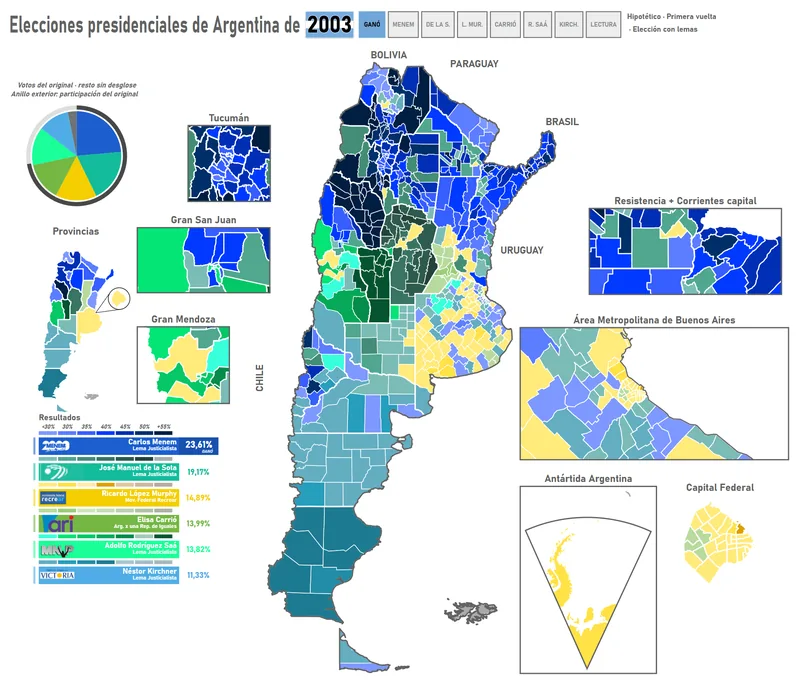
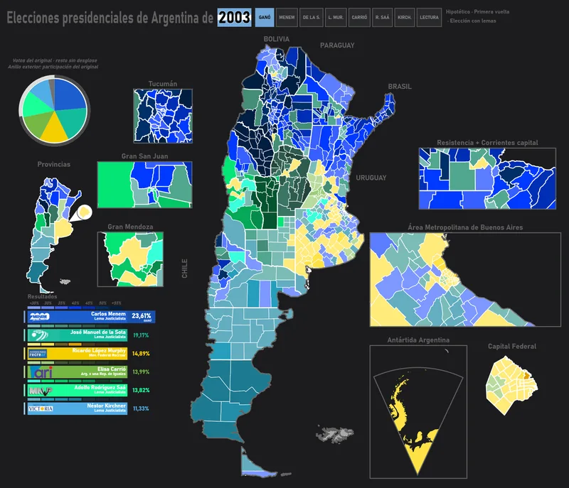
Elección con lemas
Descargar votos estimados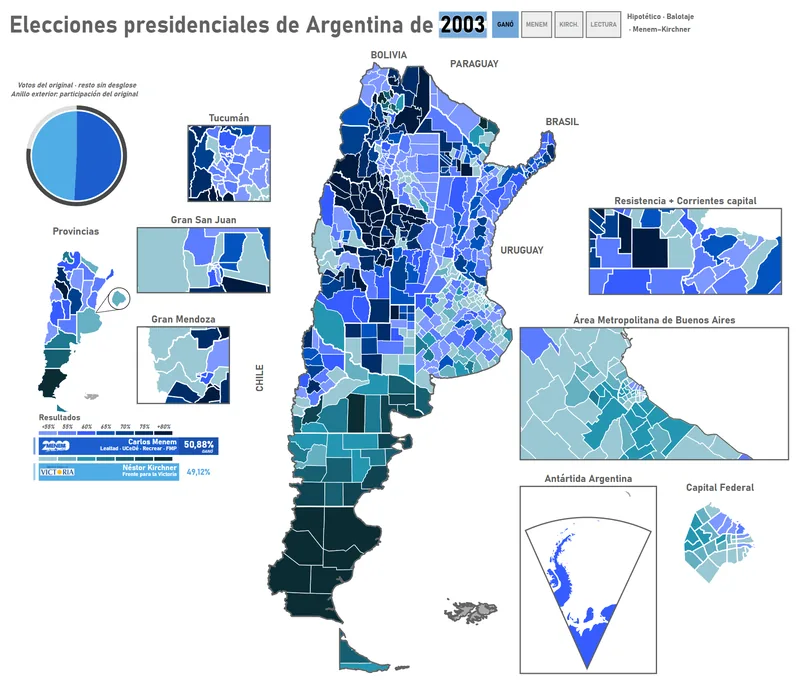
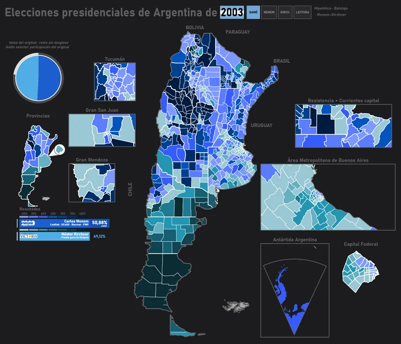
Menem / Kirchner
Descargar votos estimados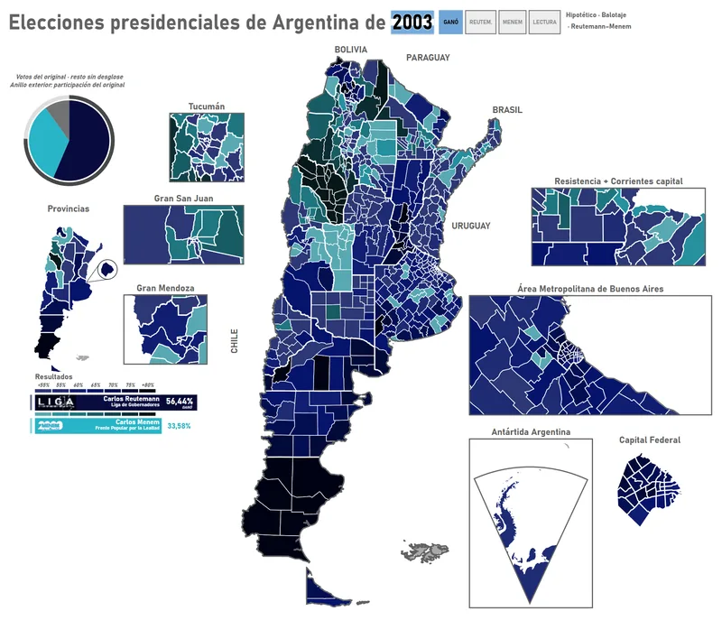
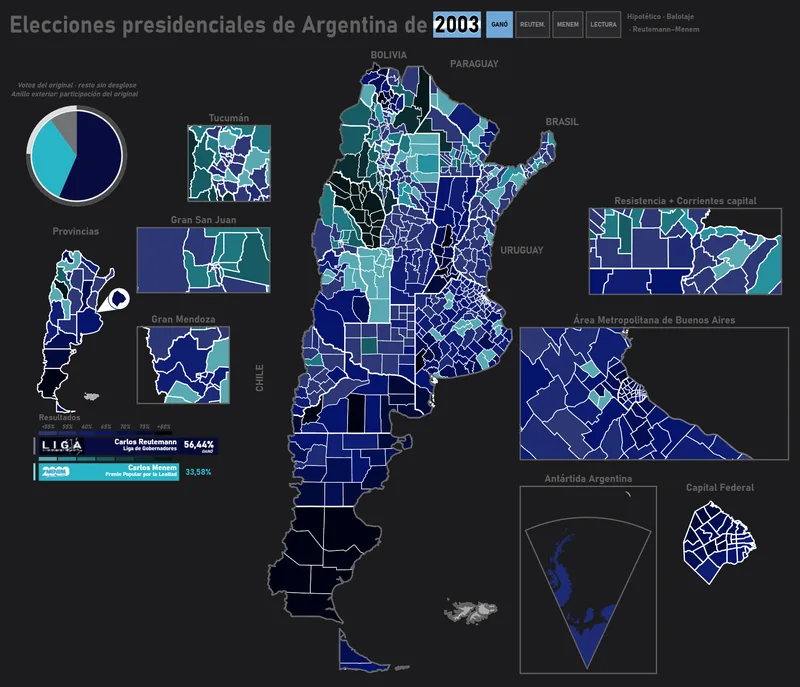
Reutemann / Menem
Descargar votos estimados
- Ganó. Votos enteros del escenario estimado.
- Lectura. Ganadores legibles; beige donde falta lectura.
- Porcentajes. Valores locales del modelo.